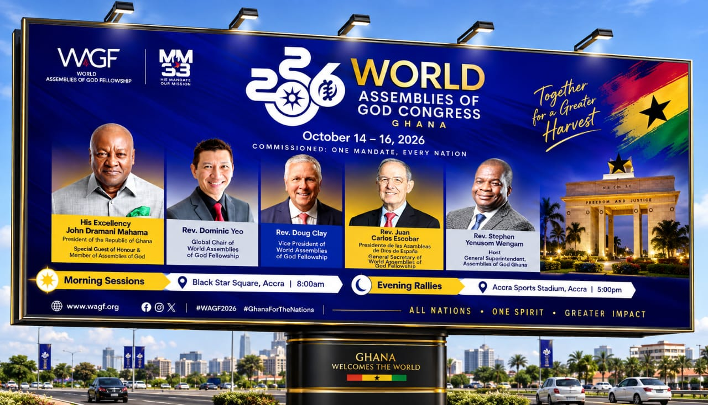
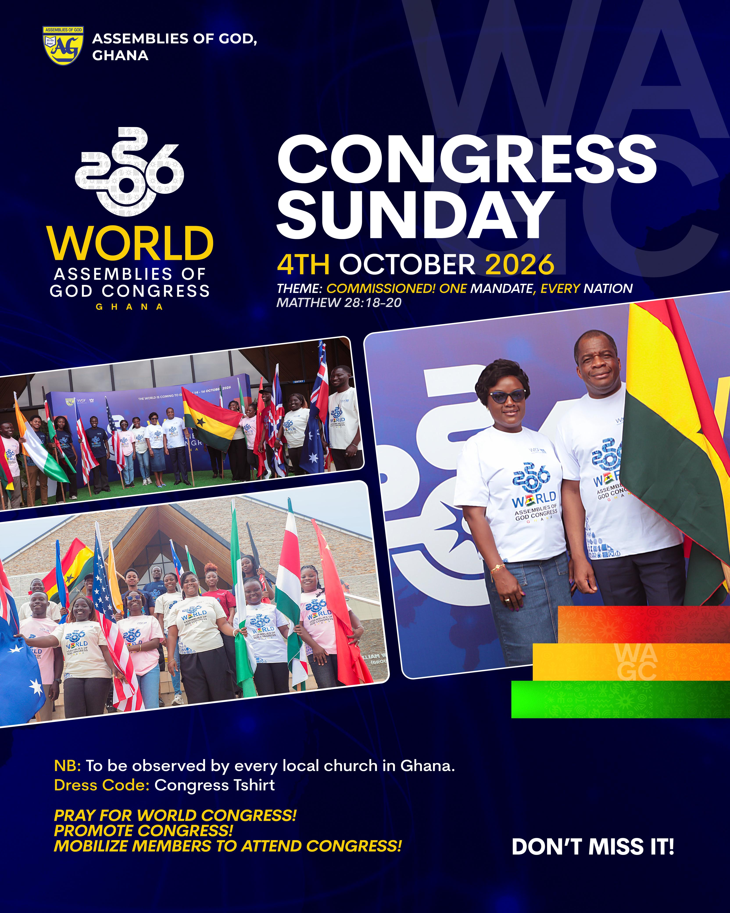

The Assemblies of God is the world's largest Pentecostal church, with over 70 million members in 190 countries. Our story began in 1906 from the Azusa Street Revival, officially formed in 1914 in Hot Springs, Arkansas.
Jesus Christ is our Saviour, Healer, Baptizer, and Coming King.
The Assemblies of God (AG), officially World Assemblies of God Fellowship, has over 70 million members in 367,000 churches in over 190 countries.
Started from Topeka, Kansas (1901) with Charles Parham and Agnes Ozman, then the Azusa Street Revival in Los Angeles led by William J. Seymour with speaking in tongues, healing and spiritual gifts.
About 300 leaders met April 2-12, 1914 in Hot Springs, Arkansas to unite in doctrine and missions. They formed the General Council and elected E.N. Bell as first chairman.
The Bible is inspired, One God in three persons, Salvation through Jesus, Baptism in the Holy Spirit with tongues, Divine Healing, and Second Coming of Christ,etc.
From one hotel meeting in 1914 to a global family, preaching Jesus as Saviour, Healer, Baptizer and Soon-Coming King. Our mission: Evangelism, Worship, Discipleship.
World Assemblies of God is holding the 2026 worldwide congress of which Ghana is honoured to host this congress.It is scheduled to happen on the 14th to 16th October,2026. Morning sessions start 8:00 GMT at Black Star Square,Accra while evening rallies are to start 5:00pm GMT at Accra Sports Stadium,Accra
Read Ghana Story

From 1914 to today,Assemblies of God has carried the gospel to the whole world. Find your place in the story.